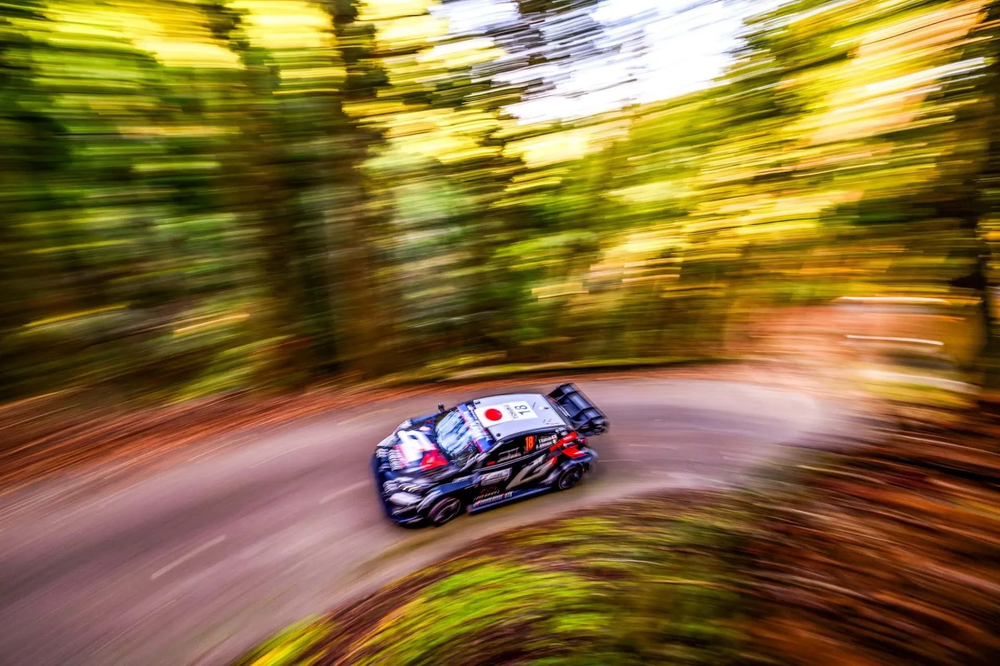
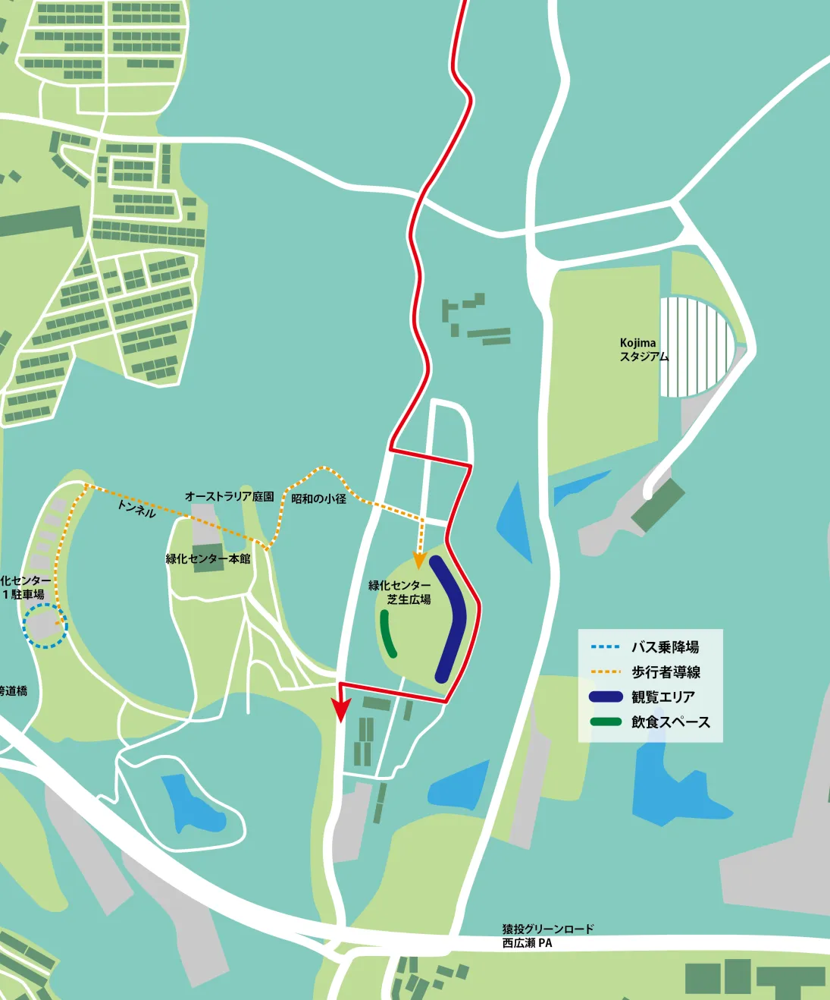
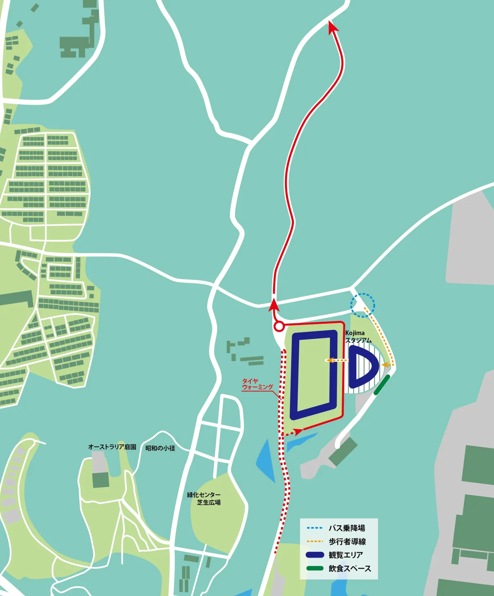

Rally Japan 2026 - Route Preview
Cover and thumbnail: @ World
Rally Japan plays host to the last tarmac rally of the 2026 WRC Season and the Rally1 era, featuring twisty and technical stages in the region of Aichi. This year's route has seen some minor changes compared to the previous edition.
Thursday
Thursday features a run of the pre-event Shakedown stage, which will also be used in reverse on Sunday.
Shakedown: Kuragaike Park - 2.53km
Changes compared to past editions: The stage is pretty much identical to last year's Shakedown, apart from a small section with a small deviation one kilometer from the end.
Stage description: The first two kilometers of the stage are on a twisty tarmac road in the forest. It features many elevation changes, giving a roller-coaster feeling, and also has many surface changes, between a smooth and a more broken surface. After an exceptionally narrow section, the route then exits the forest, and after a donut on a roundabout, climbs uphill on a smooth medium-wide road until the finish.
Toshi Arai had a heavy accident on this stage in 2022.
The same stage will be used in Reverse on Sunday, as SSS17/18 Kuragaike Park SSS.
Friday
The first proper day of action features a new stage, Asuke, that replaces Sinshiro, the stage Josh McErlean had a big crash last year. Isegami's Tunnel and Inabu/Shitara return from 2025, with the former in an extended configuration.
SS1/4 Asuke - 12.90km
Changes compared to past editions: Brand new stage, never used before in the rally.
Stage description: Asuke is a brand new stage, replacing Sinshiro. The beginning of the test is on a wide road that is fast. From 1.75 to 5.20km the stage runs parallel to a river, becoming more technical and flowing, with the road becoming progressively more worn.
Following a hairpin, there's a stretch on a very worn and sinuous road, after which the route joins a wide and fast road. After a junction, there's a series of high-speed sections joined together by junctions, after which the stage joins the forest, continuing to be mostly fast on a medium-wide road, until the finish.
SS2/5 Isegami's Tunnel - 24.29km
Changes compared to past editions: The stage has been extended by almost five kilometers, using a brand new road for the finish.
Stage description: Isegami's Tunnel is perhaps Rally Japan's most famous stage since the event's relocation to the Aichi province. The stage named after the rumoured to be haunted tunnel has claimed plenty of victims through the years, including Kajetan Kajetanowicz, who crashed at the exit of the tunnel in 2022, Dani Sordo, whose i20 Rally1 caught fire in the same year, Katsuta, Fourmaux and Sordo going off in the same corner in the rain in 2023, and then in 2024, Andreas Mikkelsen crashed out on the second pass.
Initially on a fast and wide road, the stage quickly becomes narrower and twisty as it enters the forest, being quite polluted in sections. This sinuous section becomes faster from 3.1km to 5.41km before becoming very slow and technical at 7.1km, heading downhill. There's a series of tight hairpins at 9.56km
At 10.8km the stage passes through Isegami's Tunnel, and afterwards continues onto a very tight and broken road, initially making its way uphill, being twisty. It then becomes faster, heading downhill, remaining worn and narrow, before another twisty section at 16.57km
Following a junction the surface of the road becomes smoother, but the route remains twisty and technical, changing between uphill and downhill.
After a hairpin turn onto a wider road, the test becomes high-speed and flowing, with the finish being on a patchy and twisty road.
SS3/6 Inabu - Shitara - 17.08km
Changes compared to past editions: It's the same Inabu-Shitara stage that was used in 2025. Thierry Neuville crashed here in 2023, but that section is no longer part of the test.
Stage description: The stage is initially on a wide road, with high-speed sections and long winding corners. At 3.6km, it turns away from that road, and joins a narrower, bumpier one, into the forest. The stage becomes twisty and technical, with many slow corners.
A faster section starting from 6.5km, leads the cars onto a smoother road, with the stage continuing to be faster than before. The road surface becomes more worn at 11km, with the stage then joining the fast and wide road it started from at 12.1km.
After two deviations at 12.4 and 13km, the stage turns onto a narrow and broken downhill road, which is slow and sinuous until the finish.
Saturday
Saturday is the longest day of the rally at almost 121km. It features three stages used twice, as well as two passes of a new SSS in Aichi. There is no midday service, just a Tyre fitting zone in Enakyo Park after Mt. Kasagi, after which the crews will tackle the same stages in reverse order.
SS7/12 Obara - 16.44km
Changes compared to past editions: The same as last year's Obara test.
Stage description: The stage starts off on a narrow and worn road, which becomes wider and faster shortly after. It again becomes worn and medium-wide as it heads into the forest at 2.4km, with a twisty section ensuing.
After a hairpin at 6.2km, the stage turns onto a very narrow and dirty downhill road, which is twisty and technical, with trees running alongside its path.
Following a junction at 8.9km, the route follows a wide two-lane road, on a broken surface, for a brief fast section with big straights and high-speed corners, including a chicane.
At 12.6km, the stage turns onto a smooth medium-wide road, with armcos on each side, and becomes more technical. After a hairpin at 14km, it turns narrower again, with the end of the stage being on a medium-wide and flowing section.
SS8/11 Ena - 21.25km
Changes compared to past editions: Identical to the 2025 stage, just shortened slightly from the beginning. Elfyn Evans and Takamoto Katsuta picked up punctures on this stage in 2022. in 2024, the first pass of the stage had to be cancelled due to a van making its way onto the live stage.
Stage description: The start of the stage is on a medium-wide and bumpy road, which becomes narrow and twisty as the stage climbs into the forest.
From the 6km mark and onwards, the stage turns downhill, on a very tricky sinuous section that is full of hairpins and slow corners. It then turns onto a wide, two-lane road at 10.5km, with a high-speed section ensuing, as the stage starts to climb uphill again.
Said road becomes narrow and worn following a tight bridge pass at 11.2km, becoming twisty and sinuous soon after. A fast passage comes after that from 13.5 to 15.4km, again on a narrow and worn surface, before the stage again becomes slow and technical, remaining the same until the finish.
SS9/10 Mt. Kasagi - 19.32km
Changes compared to past editions: Last year's Mt. Kasagi stage, with a new start.
Stage description: The new start is on a wide and flowing two-lane road. At 3.8km, the stage turns onto a different road, which leads to a mickey mouse section, which was where the stage started at in 2024. Takamoto Katsuta lost his power steering here in 2025.
That section is in an open area, with red/white barriers lining up the route, featuring chicanes and two donuts. It leaves this section at 6km, and continues onto a narrow and twisty road, which is slow and technical, climbing uphill. Following a junction at 10.4km, the stage goes downhill, and continues to be very slow and technical. Josh McErlean hit a tree stump and broke his suspension here in 2024.
At 11.7km, the stage becomes twistier, with a series of downhill hairpins appearing. After a junction at 14.03km, it continues onto a smoother and slightly wider road, which is again technical and slow. That road becomes narrow and worn in places as the stage enters the forest. A short faster section at 19.69km breaks the monotonous slow and sinuous nature of the stage, with the finish being at its end.
SSS13/14 Fujioka - 3.19km
Changes compared to past editions: A new SSS in Aichi, inside a park.


Stage description: The stage starts off right next to the Kojima No Stadium, and following a donut joins a medium-wide, high-speed, forest road.
At 2.46km it joins a narrow road inside a park, where after a series of junctions reaches the finish of the stage.
Sunday
The last day of action features three repeated stages, one of which is the Shakedown in reverse. Nukata and Lake Mikawako again feature, in an identical configuration to last year.
SS15/19 Nukata - 20.49km
Changes compared to past editions: Identical to last year's Nukata stage. This is where Ott Tanak went off the road from the lead in 2024, and where Adrien Fourmaux lost his door and retired in 2025.
Stage description: The stage starts off in a wide two-lane road which has many medium speed corners. After 3km, it turns onto a road which is initially narrow, but widens shortly after, going into the forest. This road is generally fast, with medium speed corners.
The stage then turns onto a smooth and narrower road at 5.1km, with a high-speed section on a wide road following, passing through a small village.
After that the stage re-enters the forest on a worn and broken road at 8.6km, becoming twisty and slow. Following a brief pass through a wide road, it rejoins a forest road, which is very narrow, bumpy and broken, and initially very slow and sinuous.
The next 1.4km is fast and flowing, on another wide two-lane road, before the stage again joins another route inside the forest, which is very twisty, including some tight acute uphill hairpins.
Following another fast section on a wide road from 17.74 to 18.66km, which includes a chicane, the stage reaches the finish, passing through a medium-wide section with fast and medium speed corners.
SS16/20 Lake Mikawako - 13.98km
Changes compared to past editions: Identical to last year's Power Stage.
Stage description: The first 3.5km of the Power Stage are on a medium-wide to narrow road, that is smooth and twisty. A flat-out section follows, before the stage turns onto a short narrow section, which includes a tight pass through a bridge.
At 5.3km the route joins a narrow-ish smooth uphill road, which becomes slow and sinuous as the stage enters the forest. Following a hairpin at 9.75km, the stage turns onto a wider road, going downhill, which is high-speed, and features a technical section at 11km. As the stage exits the forest, it becomes fast again, and has a small technical and slow section just before the finish.
Follow Powerslide!

Written by Dimitris Theodorou
Central Rally Aichi / Gifu, ラリージャパン, Rallye du Japon 日本ラリ, マップ, アイテナリ, 日本, ラリ, 地図, ルートプラン, タイムスケジュール, 評価テスト Rally Japan 2025 route map, Rally Japan 2025 stage diagramms, Rally Japan 2025 route plot, Rally Japan 2025 specialstage maps, Rally Japan 2025 stage maps, Rally Japan 2025 stage plot, Rally Japan 2025 locations, Rally Japan 2025 charts, Rally Japan 2025 sketches, Rally Japan 2025 parcours, Rally Japan 2025 tracé, Rally Japan 2025 carte, Rally Japan 2025 percorso, Rally Japan 2025 mappa